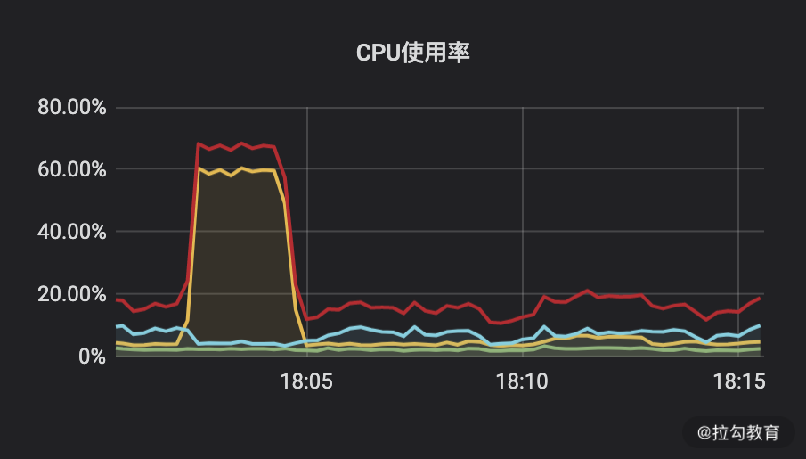

- 00 开篇词 为什么每个测试人都要学好性能测试？.md.html
- 01 JMeter 的核心概念.md.html
- 02 JMeter 参数化策略.md.html
- 03 构建并执行 JMeter 脚本的正确姿势.md.html
- 04 JMeter 二次开发其实并不难.md.html
- 05 如何基于 JMeter API 开发性能测试平台？.md.html
- 06 Nginx 在系统架构中的作用.md.html
- 07 你真的知道如何制定性能测试的目标吗？.md.html
- 08 性能测试场景的分类和意义.md.html
- 09 如何制定一份有效的性能测试方案？.md.html
- 10 命令行监控 Linux 服务器的要点.md.html
- 11 分布式服务链路监控以及报警方案.md.html
- 12 如何把可视化监控也做得酷炫？.md.html
- 13 Docker 的制作、运行以及监控.md.html
- 14 如何从 CPU 飙升定位到热点方法？.md.html
- 15 如何基于 JVM 分析内存使用对象？.md.html
- 16 如何通过 Arthas 定位代码链路问题？.md.html
- 17 如何应对 Redis 缓存穿透、击穿和雪崩？.md.html
- 18 如何才能优化 MySQL 性能？.md.html
- 19 如何根治慢 SQL？.md.html
- 20 结束语 线上全链路性能测试实践总结.md.html
- 捐赠
19 如何根治慢 SQL？
上节课带你学习了 MySQL 优化的整体思路，我们将优化策略逐渐进到了索引层面，性能优化其实也是这样，一般大处着眼，小处着手。这节课我将从更多的实例出发诊断 SQL 相关的问题，你可以认为是第 18 讲的补充和进阶。
show full processlist
上一讲已经提到过在你诊断 SQL 之前，首先要知道的是如何获取这些有问题的 SQL，一般有两种方式可以获取：
- 从慢日志文件中获取，上一讲也描述过配置方法；
- 通过 show full processlist 实时获取交互的 SQL。
有同学留言说不知道具体应该如何使用 show full processlist，所以这里我演示下该命令的具体用法。show full processlist 可以显示哪些 SQL 线程正在运行，也可以在 MySQL 交互行下直接运行，来看下这个命令会给你展现哪些信息。
mysql> show full processlist;
+--------+---------+---------------------+----------------+---------+------+----------+-----------------------+
| Id | User | Host | db | Command | Time | State | Info |
+--------+---------+---------------------+----------------+---------+------+----------+-----------------------+
| 121553 | root | localhost | mall | Sleep | 48 | | NULL |
| 139421 | netdata | localhost | NULL | Sleep | 1 | | NULL |
| 140236 | root | localhost | cctester | Sleep | 1778 | | NULL
我们来解释下信息中每列的含义。
- ID：作为一个标识 ID，如果你打算 kill 一个 SQL，可以根据 ID 来进行。
- User：当前正在执行 SQL 的用户，只显示你登录账号权限范围内能够看到的用户。
- Host：显示这个语句是从哪个 ID 和端口上发出的。
- db：当前线程使用的库名。
- Command：连接执行的命令状态，一般是 Sleep、Query、Connect 等。
- Time：状态持续的时间（单位是秒）。
- State：显示当前 SQL 语句的状态，这是一个非常重要的判断标识，比如多次刷新命令时，发现 SQL 常处于 Sending data，那么这条 SQL 大概率是存在问题的。
- Info：显示正在执行的 SQL 语句，这也是你能直接拿到慢 SQL 的方式。
实例对比：索引对性能的影响
关于索引的基本作用通过《18 | 如何才能优化 MySQL 性能？》的内容相信你已经了解，而在性能层面更直观的影响，我想通过对比实验结果也许会更清晰一点。
我们新建了一个 user 表，表结构如下：
mysql> desc user;
+-------------+--------------+------+-----+---------+-------+
| Field | Type | Null | Key | Default | Extra |
+-------------+--------------+------+-----+---------+-------+
| id | int(11) | NO | | NULL | |
| Name | varchar(18) | YES | | NULL | |
| password | varchar(20) | YES | | NULL | |
| description | varchar(100) | YES | | NULL | |
+-------------+--------------+------+-----+---------+-------+
通过查看表信息，你可以发现我并没有添加索引，接着我使用 10 个线程测试一条SQL，其中SQL内容是通过 ID 号来查看数据，性能结果表现如下：

在 ID 列添加索引后继续基于同一条 SQL ，进行 10 线程压测，结果数据如下：
从测试结果来看，在未添加索引的情况下，TPS 是 109.4，而添加逐渐索引后，同等压力下 TPS 达到了 240.2。
CPU 资源占用如下所示：

CPU 使用率图
红线：Total 黄线：User 蓝色：Iowait 绿线：System
在未添加索引的情况下，在 18:05 之前有 CPU 使用飙高，在添加索引后我在 18:10 基于同一场景测试，你会发现服务端资源使用率较低，而且 TPS 还翻了一倍以上。
通过这样一段对比，相信你能非常直观地感觉到索引带来的性能差别。
那我们是不是添加了索引就万事大吉呢，其实不是这样的，索引也有效率之分，也会存在索引失效等情况，接下来我就结合上一节课讲的执行计划来判断索引使用是否合理。有了执行计划我认为绝大多数 SQL 的问题你都可以找到优化的方向，而且对于我来说执行计划带来的直接好处是并不需要进行专门的性能测试就可以提前发现慢 SQL。
继续通过执行计划来看索引的使用技巧
1.索引覆盖
什么是索引覆盖？
走索引查询数据时，如果该索引已经包含需要的数据，则称之为索引覆盖。若索引中不能拿到想要的数据，则需要通过主键拿一整行数据，这个过程叫回表，需要一次 IO 操作，所以我们写 SQL 时尽量使用索引覆盖，降低 IO 开销。
如何判断是否是索引覆盖？
通过 extra 判断是否显示 Using index，如下示例所示：
mysql> show create table cctester \G;
*************************** 1. row ***************************
Table: cctester
Create Table: CREATE TABLE `cctester` (
`id` int(11) NOT NULL,
`name` varchar(11) DEFAULT NULL,
`mobile` bigint(20) DEFAULT NULL,
`score` int(11) DEFAULT NULL,
`subject` varchar(20) DEFAULT NULL,
PRIMARY KEY (`id`),
KEY `idx_name` (`name`),
KEY `idx_subject` (`subject`)
) ENGINE=InnoDB DEFAULT CHARSET=utf8mb4
1 row in set (0.21 sec)
//上述这是表结构
mysql> desc select name from cctester where name ="cc";
+----+-------------+----------+------------+------+---------------+----------+---------+-------+------+----------+-------------+
| id | select_type | table | partitions | type | possible_keys | key | key_len | ref | rows | filtered | Extra |
+----+-------------+----------+------------+------+---------------+----------+---------+-------+------+----------+-------------+
| 1 | SIMPLE | cctester | NULL | ref | idx_name | idx_name | 47 | const | 1 | 100.00 | Using index |
+----+-------------+----------+------------+------+---------------+----------+---------+-------+------+----------+-------------+
1 row in set, 1 warning (0.01 sec)
//上述是第一段执行计划
mysql> desc select name,score from cctester where name ="cc";
+----+-------------+----------+------------+------+---------------+----------+---------+-------+------+----------+-------+
| id | select_type | table | partitions | type | possible_keys | key | key_len | ref | rows | filtered | Extra |
+----+-------------+----------+------------+------+---------------+----------+---------+-------+------+----------+-------+
| 1 | SIMPLE | cctester | NULL | ref | idx_name | idx_name | 47 | const | 1 | 100.00 | NULL |
+----+-------------+----------+------------+------+---------------+----------+---------+-------+------+----------+-------+
1 row in set, 1 warning (0.00 sec)
//上述是第二段执行计划
首先看下 cctester 表的结构，再观察下面两个 SQL 的执行计划对比，第一个 SQL 走 name 字段，只拿 name 字段内容，第一段执行计划显示了 Using index，说明索引覆盖了；而第二个 SQL 需要额外取 mobile 字段，所以需要回表，你也可以发现第二段执行计划 Extra 列返回的 NULL，所以没有用到索引覆盖，这些细小的差别都可以通过执行计划捕捉到。
2.联合索引
联合索引就是多个字段组成联合索引，在上一讲我们也讲过基本的作用和最左前缀规则。不过我发现一个误区，同样还是这样的一个示例 SQL，索引规则同样是 index_name(c1,c2,c3)，下面这样的示例一定是符合最左前缀规则的：
SELECT * FROM table WHERE c1="1" AND c2="2" AND c3="3"
那么，我改变下 SQL 的查询顺序，如下所示：
SELECT * FROM table WHERE c2="2" AND c3="3" AND c1="1"
请问这样还满足最左前缀规则吗？对于 AND 这样的情况，可能很多同学觉得这个顺序和索引列不一致，应该是不满足最左前缀了，事实上不是这样的。
不管你是使用 (c1,c2,c3) 或者是 (c2,c3,c1)，都是使用了联合索引，虽然表面上 (c2,c3,c1) 不符合最左前缀规则，但是 MySQL 本身是有查询优化器，它会确定这条 SQL 根据联合索引的字段顺序，最后再确定执行计划。所以说在查询字段满足条件的情况下字段顺序查询优化器是可以帮助你“纠正”的，在你项目实操过程中，对最左前缀的理解不要只局限于字面，如果你不确定可以通过执行计划来判断。
上面我举的例子是 SQL 中查询条件进行 AND 连接，看上去比较简单，我再讲一个联合索引的常用场景，看下面这样一个案例：
mysql> desc select name,subject,score from cctester where subject = 'english' order by score;
+----+-------------+----------+------------+------+---------------+------+---------+------+------+----------+-----------------------------+
| id | select_type | table | partitions | type | possible_keys | key | key_len | ref | rows | filtered | Extra |
+----+-------------+----------+------------+------+---------------+------+---------+------+------+----------+-----------------------------+
| 1 | SIMPLE | cctester | NULL | ALL | idx_subject | NULL | NULL | NULL | 6 | 50.00 | Using where; Using filesort |
+----+-------------+----------+------------+------+---------------+------+---------+------+------+----------+-----------------------------+
1 row in set, 1 warning (0.02 sec)
//以上是第一段执行计划
mysql> alter table cctester add index idx_subject_score_name(subject,score,name);
Query OK, 0 rows affected (0.15 sec)
//以上添加联合索引
mysql> desc select name,subject,score from cctester where subject = 'english' order by score;
+----+-------------+----------+------------+------+------------------------------------+------------------------+---------+-------+------+----------+--------------------------+
| id | select_type | table | partitions | type | possible_keys | key | key_len | ref | rows | filtered | Extra |
+----+-------------+----------+------------+------+------------------------------------+------------------------+---------+-------+------+----------+--------------------------+
| 1 | SIMPLE | cctester | NULL | ref | idx_subject,idx_subject_score_name | idx_subject_score_name | 83 | const | 3 | 100.00 | Using where; Using index |
+----+-------------+----------+------------+------+------------------------------------+------------------------+---------+-------+------+----------+--------------------------+
//以上是第二段执行计划
这里还是基于 cctester 的表结构，根据 where 条件 subject 查询之后再根据 score 排序，第一段执行计划可以看到 SQL 没有用到索引且需要额外的排序，而第二段执行计划中 SQL 使用了联合索引且不用再排序。在原理上解释就是，(subject,score,name) 索引中根据 subject 定位到的数据已经根据 score 排好顺序了，不需要再排序，这种 order by 的场景是联合索引使用最经典的案例。
3.索引失效的场景
索引虽好，但不代表你建了这条索引就一定会被使用，下面我列举了常用的索引失效的情况，也是日常工作中常见的一些情况。
隐式类型转换
表结构中类型是 varchar，SQL 中用的 int，这是开发最常忽略的问题，如下示例所示：
(root@localhost) [t]> show create table t\G
*************************** 1. row ***************************
Table: t
Create Table: CREATE TABLE `t` (
`id` int(11) NOT NULL,
`name` varchar(11) DEFAULT NULL,
`score` varchar(11) DEFAULT NULL,
PRIMARY KEY (`id`),
KEY `idx_name` (`name`),
KEY `idx_score` (`score`)
) ENGINE=InnoDB DEFAULT CHARSET=utf8mb4
1 row in set (0.00 sec)
//以上是建表语句
(root@localhost) [t]> desc select * from t where socre = '99';
+----+-------------+-------+------------+------+---------------+------------+---------+-------+------+----------+-------+
| id | select_type | table | partitions | type | possible_keys | key | key_len | ref | rows | filtered | Extra |
+----+-------------+-------+------------+------+---------------+------------+---------+-------+------+----------+-------+
| 1 | SIMPLE | t | NULL | ref | idx_score | idx_score | 47 | const | 2 | 100.00 | NULL |
+----+-------------+-------+------------+------+---------------+------------+---------+-------+------+----------+-------+
1 row in set, 1 warning (0.00 sec)
(root@localhost) [t]> desc select * from t where socre = 99;
+----+-------------+-------+------------+------+---------------+------+---------+------+------+----------+-------------+
| id | select_type | table | partitions | type | possible_keys | key | key_len | ref | rows | filtered | Extra |
+----+-------------+-------+------------+------+---------------+------+---------+------+------+----------+-------------+
| 1 | SIMPLE | t | NULL | ALL | idx_score | NULL | NULL | NULL | 4 | 25.00 | Using where |
+----+-------------+-------+------------+------+---------------+------+---------+------+------+----------+-------------+
1 row in set, 3 warnings (0.00 sec)
观察上面例子可以发现，score 字段是 varchar 类型，当 SQL 中忘写单引号则走不到索引，接下来我继续讲解实例，我举的例子你不用过多考虑业务特性，单纯看索引问题即可。
模糊匹配开头
由于 MySQL 最左匹配原则，所以查询条件模糊开头无法命中索引，如下所示：
(root@localhost) [t]> desc select * from t where score like '%9';
+----+-------------+-------+------------+------+---------------+------+---------+------+------+----------+-------------+
| id | select_type | table | partitions | type | possible_keys | key | key_len | ref | rows | filtered | Extra |
+----+-------------+-------+------------+------+---------------+------+---------+------+------+----------+-------------+
| 1 | SIMPLE | t | NULL | ALL | NULL | NULL | NULL | NULL | 4 | 25.00 | Using where |
+----+-------------+-------+------------+------+---------------+------+---------+------+------+----------+-------------+
1 row in set, 1 warning (0.00 sec)
通过执行计划你会发现上面的情况并没有命中索引。
or 不同条件
从上面建表结构中我们可以看到 name 字段和 score 字段都有索引，但直接写 or 查询两个字段无法使用索引，这种场景，我们可以将 or 改写成 union 即可。通过如下实例的第一段和第二段执行计划中涉及的索引项就可以看出。
(root@localhost) [t]> desc select * from t where name = 'allen' or score = '456';
+----+-------------+-------+------------+------+---------------------+------+---------+------+------+----------+-------------+
| id | select_type | table | partitions | type | possible_keys | key | key_len | ref | rows | filtered | Extra |
+----+-------------+-------+------------+------+---------------------+------+---------+------+------+----------+-------------+
| 1 | SIMPLE | t | NULL | ALL | idx_name,idx_score | NULL | NULL | NULL | 4 | 43.75 | Using where |
+----+-------------+-------+------------+------+---------------------+------+---------+------+------+----------+-------------+
1 row in set, 1 warning (0.00 sec)
//第一段执行计划
(root@localhost) [t]> desc select * from t where name = 'allen' union all select * from t where score = '456';
+----+-------------+-------+------------+------+---------------+------------+---------+-------+------+----------+-------+
| id | select_type | table | partitions | type | possible_keys | key | key_len | ref | rows | filtered | Extra |
+----+-------------+-------+------------+------+---------------+------------+---------+-------+------+----------+-------+
| 1 | PRIMARY | t | NULL | ref | idx_name | idx_name | 47 | const | 1 | 100.00 | NULL |
| 2 | UNION | t | NULL | ref | idx_score | idx_score | 47 | const | 1 | 100.00 | NULL |
+----+-------------+-------+------------+------+---------------+------------+---------+-------+------+----------+-------+
2 rows in set, 1 warning (0.00 sec)
//第二段执行计划
总结
本讲从实际工作出发，以慢 SQL 中问题的重灾区索引为切入点，以执行计划为手段诊断了索引的常见问题，这些都是 SQL 优化中最常见的知识点，通过实例可以让你明白这些优化带来的好处。
© 2019 - 2023 Liangliang Lee. Powered by gin and hexo-theme-book.